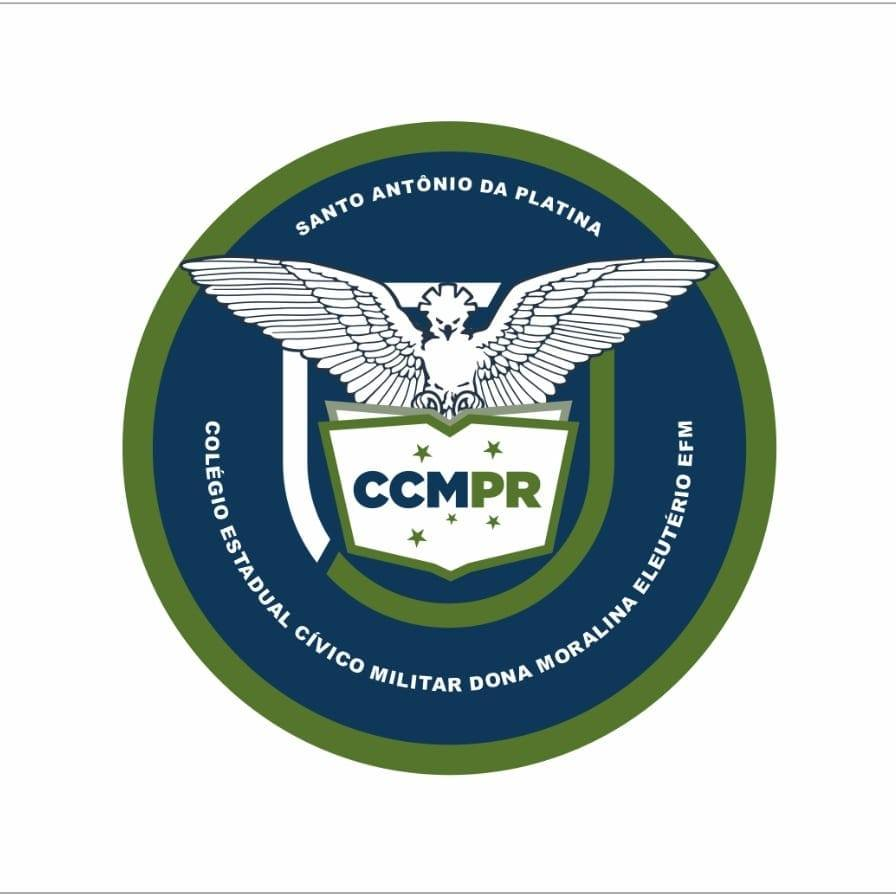

👁️
Percepção
Atividades simples ajudam a observar diferenças na percepção de cores.
O ColorVisão é uma plataforma educativa que apresenta atividades interativas de percepção de cores e conscientiza sobre acessibilidade visual.
Placas animadas são geradas dinamicamente no navegador.

ColorVisão • solução tecnológica do projeto
Projeto desenvolvido no Colégio Estadual Cívico Militar Dona Moralina Eleutério – EFM, em Santo Antônio da Platina – PR.
O ColorVisão transforma um problema observado no ambiente escolar em uma solução digital, aplicando princípios de Engenharia de Software, ciência, tecnologia e acessibilidade para estudar a percepção de cores e incentivar materiais mais inclusivos.
Algumas pessoas percebem determinadas combinações de cores de maneira diferente. Em gráficos, mapas, atividades e sinalizações, depender somente da cor pode dificultar o acesso à informação.
Atividades simples ajudam a observar diferenças na percepção de cores.
O projeto aborda visão, retina, cones e alterações na percepção cromática.
Informações importantes não devem depender exclusivamente de cores.
Clique em “Iniciar teste” para gerar a primeira placa.
Aponte a câmera do celular para o QR Code e acesse o projeto diretamente pelo GitHub Pages. Assim, cada visitante pode realizar o teste no próprio aparelho e conhecer a proposta desenvolvida pela escola.